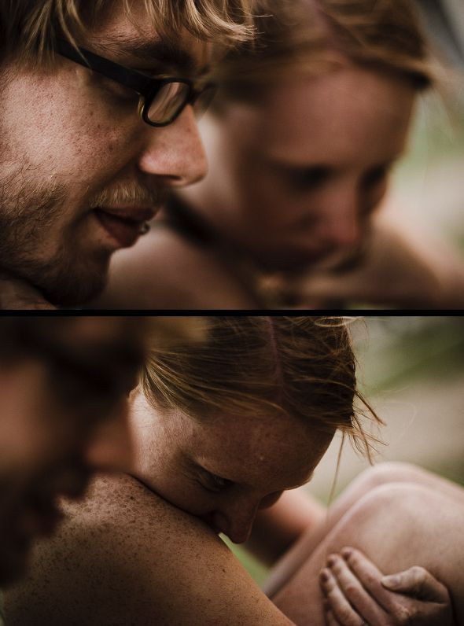

 ƒ/1.4, 1/60 s, 100 ISO
Copyright © 2005–11 Joe Lencioni
This work is licensed under a Creative Commons Attribution-NonCommercial-ShareAlike 2.5 License. Attribution requirements for my work.


6 Comments
June 30th, 2006 at 11:15 am
Wahoo for freckles!!!
June 30th, 2006 at 11:25 am
Awesome, Joe. What kind of lens are you using these days? Is this your 70-200mm 2.8F? It looks like it would have to be a big aperture setting.
What do you think about your Tamron? I’m looking at maybe getting the 18-200.
July 2nd, 2006 at 4:28 am
i love this shot and several of the other ones. Beautiful subjects and color treatment.
July 2nd, 2006 at 7:48 pm
I really like both of these but the first one is my favorite. Nice work!@
July 5th, 2006 at 7:30 am
@Justin: This lens is actually my 50mm 1.4F. When it’s wide open at 1.4, it has a deliciously small depth of field. If you have about $300 to spend on a lens, that is what you should get. I love it.
I love it.
My Tamron has served me well for the time that I used it. Most of the photos on this site were taken with it. It has an incredible zoom range–28-300mm. Cons are that it isn’t very sharp compared to canon lenses and it isn’t very fast. I think that the widest the aperture can go on mine is something like 4.5… and when you are zoomed in all the way something like 6.0. That alone was very limiting. When I got my 50mm 1.4 it was like a whole new world of possibilities was opened up for me.
I’m actually considering selling my Tamron if you’re interested in buying it.
February 24th, 2008 at 1:11 pm
[...] back after a brief hiatus. I went to Madison, WI this weekend to visit my friends Rob and Alyssa. Madison is a pretty neat city and that lake is absolutely gorgeous. We took a canoe out one night. [...]